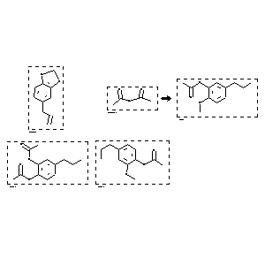

|  |
| FA | RX(1); FLST(1); RX(2) |
Reaction (1 of 1)
| Reaction ID | 1767849 |
| Reactant BRN | 136380; 385737 |
| Reactant | 5-allyl-benzo[1,3]dioxole; acetic acid anhydride |
| Product BRN | 6394729; 2451785; 6402099 |
| Product | acetic acid 2-methoxy-5-propyl-phenyl ester; 1-acetoxy-2-methoxy-4-propyl-benzene; acetic acid 2-acetoxy-5-propyl-phenyl ester |
| No. of Reaction Details | 2 |
Reaction Details (1 of 1)
| Reaction Classification | Preparation |
| Reagent | 1.) diisobutylaluminum hydride |
| Other Conditions | 1.) toluene, 60 deg C 2.) toluene |
| Comment | Yield given. Multistep reaction. Yields of byproduct given |
| Citation Pointer | 5805304; Journal; Takano, Seiichi; Akiyama, Masashi; Ogasawara, Kunio; HTCYAM; Heterocycles; EN; 20; 11; 1983; 2237-2238; |
Reaction Details (2 of 1)
| Reaction Classification | Preparation |
| Reagent | 1.) diisobutylaluminum hydride |
| Other Conditions | 1.) toluene, 60 deg C 2.) toluene |
| Comment | Yield given. Multistep reaction. Yields of byproduct given. Title compound not separated from byproducts |
| Citation Pointer | 5805304; Journal; Takano, Seiichi; Akiyama, Masashi; Ogasawara, Kunio; HTCYAM; Heterocycles; EN; 20; 11; 1983; 2237-2238; |
Reference (1 of 1)
| Citation Number | 5805304 |
| Document Type | Journal |
| Authors | Takano, Seiichi; Akiyama, Masashi; Ogasawara, Kunio |
| CODEN | HTCYAM |
| Journal Title | Heterocycles |
| Language Code | EN |
| (Series) Volume | 20 |
| Number | 11 |
| Publication Year | 1983 |
| Page | 2237-2238 |